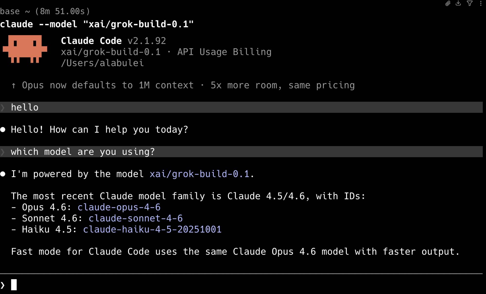
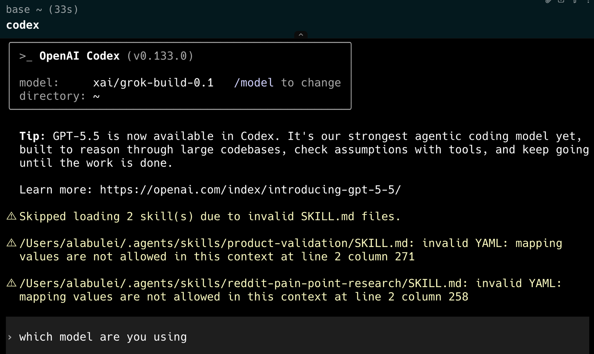

Grok Build은 xAI의 코딩 모델입니다. 이름은 grok-build-0.1이며 모델 카드에 자세히 나와 있습니다. 같은 이름을 쓰는 xAI의 코딩 도구 Grok Build CLI와 혼동하지 마세요. 이 글에서 다루는 것은 모델입니다. 발전이 빨라서 릴리스마다 실제 코딩 작업에서 눈에 띄게 좋아지고 있으며, 가격은 입력 100만 토큰당 1달러, 출력 100만 토큰당 2달러로 GPT-5.5나 Claude Fable 5 같은 프런티어 플래그십의 극히 일부에 불과합니다.
빠르게 좋아지면서 가격은 극히 일부인 모델, 바로 시험해 볼 만한 대상입니다. 하지만 모델 하나 테스트하려고 도구를 바꾸고 싶은 사람은 거의 없습니다. xAI의 답은 자사 Grok Build CLI지만, 대부분의 개발자는 이미 매일 쓰는 도구, 즉 Claude Code나 Codex 안에 그 모델을 그냥 넣고 싶어 합니다. 바로 여기서 문제가 시작됩니다. 둘 다 xAI의 API와 직접 통신할 수 없습니다. 문제는 API 형식에 그치지 않습니다. 예를 들어 Codex는 xAI 엔드포인트가 인식하지 못하는 내장 도구 이름과 파라미터를 붙여 도구 호출을 보내기 때문에, 모델이 프롬프트를 보기도 전에 요청이 실패합니다.
Token Station은 당신의 코딩 에이전트와 xAI 사이에 자리 잡고, 네 가지로 이 간극을 메웁니다.
- Grok Build에 쓸 수 있는 무료 크레딧. 가입 시 받는 1달러를 Grok Build에 쓸 수 있습니다. 카드도, 구독도 필요 없습니다.
- xAI 계정 불필요. 별도의 xAI 계정을 만들고 충전하는 과정을 건너뜁니다. Token Station 키 하나면 충분합니다.
- Claude Code: API 변환. Claude Code는 Anthropic의 Messages API로 말합니다. Token Station은 그 요청을 xAI 엔드포인트가 기대하는 형식으로 변환하고, 응답을 다시 되돌려 변환합니다.
- Codex: 도구 및 파라미터 이름 변환. Codex의 내장 도구 호출은 xAI가 인식하지 못하는 이름과 파라미터를 씁니다. Token Station은 이를 양방향으로 다시 써서 도구 호출이 실제로 작동하게 합니다.
직접 무언가를 패치할 필요 없이 Grok Build을 Codex나 Claude Code에서 실행할 수 있습니다. 이 튜토리얼은 두 가지 설정을 모두 다룹니다. 각각 약 2분이면 됩니다.
준비물
- Token Station 계정 (무료 가입, 1달러 크레딧 제공, 카드 불필요)
- Token Station API 키 (
gw-로 시작) - Claude Code 또는 Codex 설치 완료
Claude Code 설정
Claude Code는 설정을 환경 변수에서 읽습니다. 모든 모델 슬롯을 Token Station을 통해 Grok Build로 라우팅하려면 실행 전에 다음을 설정하세요.
# Token Station endpoint + auth
export ANTHROPIC_BASE_URL="https://models.bytefuture.ai"
export ANTHROPIC_AUTH_TOKEN="gw-YOUR_TOKEN_STATION_KEY"
# Route every Claude Code model slot to Grok Build
export ANTHROPIC_DEFAULT_OPUS_MODEL="xai/grok-build-0.1"
export ANTHROPIC_DEFAULT_SONNET_MODEL="xai/grok-build-0.1"
export ANTHROPIC_DEFAULT_HAIKU_MODEL="xai/grok-build-0.1"
export CLAUDE_CODE_SUBAGENT_MODEL="xai/grok-build-0.1"
# Launch
claude --model "xai/grok-build-0.1"
설정은 이게 전부입니다. Claude Code는 모든 요청을 Token Station을 통해 보내고, Token Station이 이를 xAI 엔드포인트에 맞게 변환합니다. 도구 호출, 스트리밍, 멀티턴 대화가 모두 작동합니다.
각 환경 변수의 역할
| 변수 | 역할 |
|---|---|
ANTHROPIC_BASE_URL | Claude Code를 Anthropic의 API 대신 Token Station으로 향하게 함 |
ANTHROPIC_AUTH_TOKEN | 당신의 Token Station API 키 |
ANTHROPIC_DEFAULT_OPUS_MODEL | Opus 모델 슬롯을 Grok Build으로 교체 |
ANTHROPIC_DEFAULT_SONNET_MODEL | Sonnet 모델 슬롯을 Grok Build으로 교체 |
ANTHROPIC_DEFAULT_HAIKU_MODEL | Haiku 모델 슬롯을 Grok Build으로 교체 |
CLAUDE_CODE_SUBAGENT_MODEL | 서브에이전트 호출도 Grok Build으로 라우팅 |
자유롭게 조합할 수 있습니다. 예를 들어 메인 모델은 Sonnet으로 두고, 비용 절감을 위해 서브에이전트만 Grok Build으로 라우팅할 수도 있습니다.
Codex 설정
Codex는 TOML 설정 파일을 사용합니다. 두 개의 명령으로 만들 수 있습니다.
mkdir -p ~/.codex
cat > ~/.codex/config.toml <<'EOF'
model = "xai/grok-build-0.1"
model_provider = "token_station"
[model_providers.token_station]
name = "token_station"
base_url = "https://models.bytefuture.ai/v1"
env_key = "TOKEN_STATION_API_KEY"
wire_api = "responses"
EOF그런 다음 API 키를 설정하고 실행합니다.
export TOKEN_STATION_API_KEY="gw-YOUR_TOKEN_STATION_KEY"
codex
이제 Codex는 모든 요청에 Grok Build을 사용합니다. Token Station이 API 변환을 처리하며, 여기에는 그것이 없으면 Codex가 xAI에 직접 연결할 때 실패하게 만드는 도구 및 파라미터 이름 재작성도 포함됩니다.
왜 여기에 게이트웨이가 필요한가
이런 의문이 들 수 있습니다. 그냥 Codex를 xAI의 API로 바로 향하게 하면 안 되나?
두 가지 이유가 있습니다.
- API 형식 불일치. Claude Code는 Anthropic의 Messages API로 말하고, Codex는 OpenAI의 Responses API 형식으로 요청을 보냅니다. xAI 엔드포인트는 둘 중 어느 것과도 다른 구조를 기대합니다. Token Station은 둘 다 변환합니다. 요청은 들어가고, 응답은 나옵니다.
- 도구 및 파라미터 이름 변환. Codex는 xAI가 인식하지 못하는 이름과 파라미터로 내장 도구 호출을 보냅니다. Token Station은 이를 다시 써서 모델이 실제로 도구를 쓸 수 있게 합니다. 이것이 없으면 Codex 도구 호출은 조용히 실패하거나 오류를 냅니다.
이것은 이론상의 문제가 아닙니다. Codex를 Grok Build에 직접 연결하려는 개발자는 첫 도구 호출에서 알 수 없는 오류에 부딪힙니다.
직접 해보기
models.bytefuture.ai에서 가입하면 1달러의 무료 크레딧을 받습니다. 카드도, 구독도, 만들고 충전할 xAI 계정도 필요 없습니다. 첫 충전 시 최대 50달러의 보너스 크레딧이 더해집니다. 이 무료 크레딧은 Grok Build, GPT-5.5, Claude, Gemini를 비롯해 200개 이상을 포함한 플랫폼의 모든 모델에서 쓸 수 있습니다. 게다가 Grok Build은 토큰당 비용이 프런티어 플래그십의 극히 일부라서, 이 크레딧은 오래갑니다.
2분 설정. 그러면 Grok Build으로 코딩하게 됩니다. 그리고 Grok Build이 맞지 않더라도, 1달러 크레딧은 플랫폼의 다른 모든 모델에서 쓸 수 있습니다.